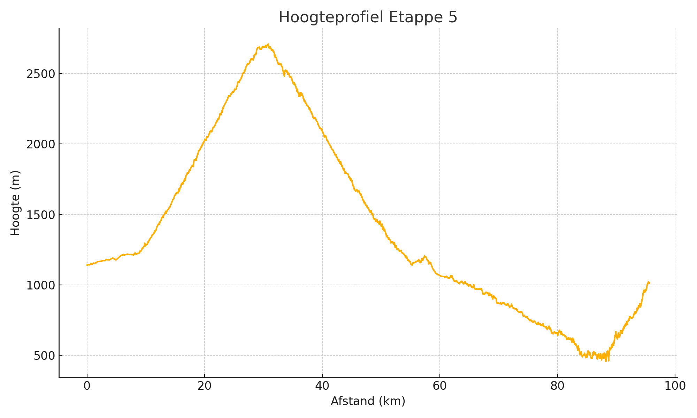

Top van de Col: Cime de la Bonette

Details
Chauffeur: Thijs, Maarten
Adres hotel: 1 Chemin des Canebiers, 06420 Rimplas, Frankrijk
Voorbeschouwing - kort
Etappe 5 van Jausiers naar Saint-Saveurs-sur-Tinée (95 km, 2 600 m klimmen) gaat via de 24 km lange, woeste klim naar Cime de la Bonette (2 802 m), gevolgd door een technische afdaling en een golvende finale in de Tinée-vallei – een dag voor durf, rijklaar techniek en beulenkracht.
Basisgegevens
| Afstand (km) | Klim (m) |
|---|---|
| 95 | 2600 |
Hoogteprofiel
Voorbeschouwing Etappe 5
De slotetappe van Jausiers naar Saint-Saveurs-sur-Tinée is een capstone in de Route des Grandes Alpes: 95 km en 2 600 m klimmen langs de majestueuze Cime de la Bonette, de hoogste verharde rondweg van Europa. Vanaf het startschot in Jausiers loopt de weg eerst soepel omhoog door boomrijke valleien, maar na enkele kilometers begint de voorbeschouwing van pure Alpenpracht en -pijn.
De voet van de Bonette ligt er sereen bij, maar al snel voel je de schaal van de uitdaging: 24 km aaneengesloten omhoog, met gemiddeld 6,9 % en uitschieters rond de 10 %. De eerste hectometers vergen souplesse om het juiste ritme te vinden, daarna volgen eindeloze haarspeldbochten die als een trap in de rotswand zijn gekerfd. Hier kan een klassementsrenner – met de benen van een beul en het hoofd van een filosoof – een vroege demarrage plaatsen.
In de beruchte “Restefond”-zone, net boven 2 700 m, draait het om minder om pure kracht en meer om ademmanagement: ijle lucht die zuinigheid vereist en scherp schakelen. Eén moment van onoplettendheid, en de benen zwabberen alsof ze laten weten dat de wc-beker niet ver zit. De top bereikt de renners op 2 802 m, waar de wind onbarmhartig om de oren giert en het panorama adembenemend – maar verraderlijk – mooi is.
De afdaling die volgt, behoort tot het technische hoofdstuk van deze etappe: smalle bochten met steile afgronden, ruwe asfaltplekken en kleine kopersporingen in het wegdek. Durf en finesse zijn hier onlosmakelijk: wie te gretig stelt remmen uit, kan over de rand verdwijnen; wie te behoedzaam is, verliest het ritme en seconden.
Na de lange afdaling mondt de route uit in de Tinée-vallei, waar de wind door smalle kloven raast en de zon op de hellingen spat. De laatste kilometers naar Saint-Saveurs-sur-Tinée zijn golvend en vragen om geconserveerde kracht: de benen voelen dan al de nasleep van bijna 2 600 hoogtemeters.
De finish zelf ligt in een schilderachtig bergdorp met steile straatjes en krappe bochten. Het is geen klassieke sprint, maar eerder een finale waar een verrassing kan opduiken: een puncher die in de juiste positie uit een bocht knalt en zijn sprintbenen heeft bewaard voor de allerlaatste meters.
Kortom, etappe 5 is een dag van uitersten: de ultieme klim, de gevaarlijke afdaling en een finale langs ruige bergsferen. Wie hier durft te dromen met de benen van een krijger en de blik van een dichter, sluit de Route des Grandes Alpes af als ware held.